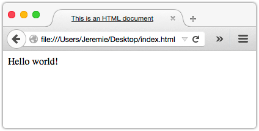
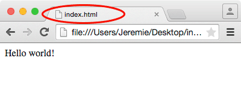
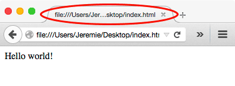
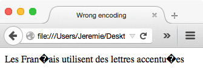

HTML starts with an HTML document. Browsers are pretty forgiving, but save yourself some headaches by setting up your document correctly from the outset.
| Prerequisites: | You should make sure you have a text editor installed first. Also, it's good to get familiar with some general HTML basics. |
|---|---|
| Objective: | Learn how to set up a blank HTML document, and why each item in the code is there. |
HTML documents share all the same structure and this article fully explain each parts of that basic structure. However, for once, let's jump right to the end and let's take a look a that basic structure:
<!DOCTYPE html>
<html lang="en">
<head>
<meta charset="utf-8">
<title>Write a title here</title>
<!-- Add any other metadata here -->
</head>
<body>
<!-- Add here all content exposed to the user -->
</body>
</html>
In what follows, we discuss the rationale behind this code sample, but in the meantime feel free to copy/past that code to use it in your favorit text editor as a reusable basic document boilerplate.
What is an HTML document?
An HTML document or webpage is simply plain text structured with tags, that is, with keywords enclosed in angle brackets ("<>") (like <html> and <body>). Tags usually come in pairs (for example, the opening tag <body> has a matching closing tag </body>). An element consists of a string of text surrounded by a pair of matching tags.
Various programs, most often browsers, process those tags and generate (or "render") output that the end-user can see, hear, or feel.
Since HTML is a plain-text format, you can write HTML files with any text editor. Adding HTML tags to plain text is really easy and you'll get the hang of it in no time. It does pay to understand the most common tags and attributes so you choose the right tools for the job. That's why we're here to help you at the MDN Learning area.
In the rest of the article, we explain what's going on in the previous code sample:
- What is a doctype and why it's important.
- The root
<html>element. - The difference between the
<head>and<body>elements. - The importance of the
<title>. - How to define the character set with the
<meta>element.
The doctype
The following text string is called the doctype.
<!DOCTYPE html>
As far as HTML is concerned, the Doctype is a leftover from history. So why are we still using it?
If you don't write <!DOCTYPE html> first thing in your document, browsers render your document in quirks mode. Quirks mode is how the browser copes with old, possibly malformed documents written in the 1990s when HTML was poorly standardized and browsers interpreted HTML in all different ways.
The Doctype triggers standard mode instead so that pages render predictably and consistently according to the standards set by the W3C and the WHATWG. This means browsers also react to errors in a standard, predictable, way.
Warning: This must be the very first thing in every HTML document. Don't put anything before the Doctype—no HTML comments, no line breaks, no spaces, nothing. Some legacy browser can be very picky about this and could switch to quirks mode if you are not very carfule about that.
The <html> element
Your whole document (besides the Doctype) goes between <html> and </html> tags. There can only be one <html> element per document.
It's possible to leave <html> implied. The browser often returns the same results regardless, but you need <html> at the very least for manipulating your whole document as one unit. For example, we wrote <html lang="en"> to indicate that the whole document is in English. Likewise, you can apply document-wide CSS styles by applying styles to <html> just like to any other element.
The <head> and <body> elements
Within <html>, you write a document head inside <head></head> tags and a body inside <body></body> tags.
The head contains metadata (data about the document) rather than content exposed to the end-user. This might include information to make your document more accessible to search engines, or maybe links to CSS stylesheets so you can define visual aspects. In the next section, we'll cover the most important contents of the head: the title and the character set declaration.
The body contains the content your end-users encounter. Naturally, the body is where you'll be spending most of your time.
HTML is very permissive on the document structure and you can leave the <head> and <body> elements implicit. Here's a document with no <html>, no <head> and no <body>:
<!DOCTYPE html> <title>This is an HTML document</title> Hello world!
In such a simple scenario, the browser can cover for you:

That being said, it's a bad idea. As you let the browser choose which content goes where, the more complex your document is, the less you can reliably distinguish head content from body content which can lead to some surprising side effect. By setting an explicit <head> and <body> you spare yourself a lot of trouble.
The document's <title>
Inside your document head, write a short and enticing title for your document. Make sure the title makes sense out of context. Just a recap on where the title goes:
<!DOCTYPE html>
<html>
<head>
<title>My amazing HTML example</title>
...
</head>
<body>
...
</body>
</html>
The title must contain only plain text. The browser will not interpret HTML elements inside <title>.
Again, omit the title at your own risk. In a page of search results, your title is the main or only way for people to tell what your document is about. In addition, graphical browsers use titles as labels for tabs.
If there's no title, browsers or search engines must come up with their own, which isn't all that helpful as you can see:
<!DOCTYPE html> <!-- No title in this document --> Hello world!
| Chrome |  |
|---|---|
| Firefox |  |
-
Setting the character set
Computers store everything as zeros and ones. All numbers must be expressed in base two (i.e., as binary numbers). To express any other value, we have to agree that such-and-such a binary number represents such-and-such a value, otherwise the zeros and ones are just gibberish.
Luckily, when we come to string representation, there's a standard called UTF-8 that assigns binary numbers to the glyphs in all major human languages. Finally we can agree, say, that "A" will be stored as "65" in base two, that is, as "01000001" in binary number.
Other less extensive encodings are still in use, so for predictable results you should explicitly declare that you're using UTF-8 in your HTML file. That's why we added <meta charset="utf-8"> in our model code above.
Note: In addition, make sure your text editor is saving your HTML file in UTF-8. Often there's a "Save as..." option in your File menu where you can specify this.
Here's what happens to an HTML document encoded in ISO-8859-1 instead of UTF-8. The browser displays � instead of French diacritics (we want the text "Les Français utilisent des lettres accentuées"):

Templates and boilerplate
You'll notice that over time, you'll create your HTML documents with the same structure again and again… it's boring. To avoid wasted time, try saving the code we gave you in its own template file. Every time you need a new HTML page, copy the template rather than retyping the same code constantly.
You can set up customized templates project by project so you don't have to keep retyping navigation bars, links to stylesheets, and other repeating code. (In fact, some people are in the business of selling HTML templates.)
Pro tip: If you have a fancy text editor with a code snippet feature, put the skeleton code we've given you into a code snippet, so you can start a new document ultra fast.
Pro tip: At some point when you'll get really familiar with HTML, we suggest you to take a look at the HTML5 Boilerplate project. It provides more advance templates for HTML documents based on industrial best practices.
Exercise
To be done, please consider contributing.